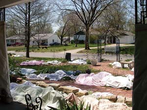

Too much warm weather in March of 2006 woke up our perennials early and had them thinking it was May. Then the forecast was for three days of hard freezing temperatures. We gathered up blankets, sheets, towels - everything we could find to cover plants. We put trash cans over roses and rugs over the hydrangeas. We raked leaf mulch over the peonies and the rudbeckia. Quilts covered the strawberries. We borrowed old sheets from the neighbors. We wrapped the clematis growing up the porch pillars with tarps and clothes-pinned them in place. The kids were practically clutching their own sheets and blankets for fear we would use them to cover day lilies. Our friends said it looked like the linen closets had exploded all over the yard.
Ironically, we had planned to attend a showing of Al Gore’s climate change movie, An Inconvenient Truth, that Thursday evening, but we didn’t have time. We were out until dark trying to save our plants from the freeze.
Did it work? Some of the plants that didn’t get covered up looked worse than those that did, but the hostas looked like frozen lettuce whether they had blankets on them or not. Two weeks later, some of the iris tried to bloom, and some were just brown and ratty looking. The strawberries blossomed, and we had plenty of asparagus. There weren’t any apples; we just couldn’t get blankets big enough to cover the whole tree. The gardens did not look their best, but a gardener has to be an optimist or give up gardening altogether.
|
 CLYDE SCHWANKE Covering your plants during an unexpected freeze can save them from a death sentence. |
|
|